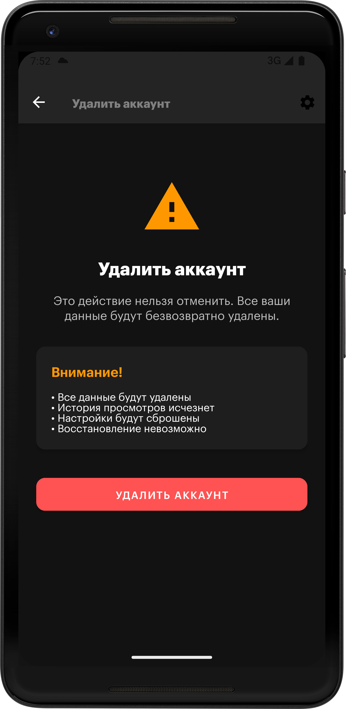

Как удалить аккаунт в приложении Trailerly
Вы можете самостоятельно удалить свой аккаунт в приложении. Для этого:
- Откройте приложение Trailerly на устройстве
- Нажмите на иконку ⚙️ в правом верхнем углу
- Выберите пункт Удалить аккаунт
- Подтвердите удаление, введя свой пароль или войдя через Google
- Нажмите кнопку Удалить аккаунт
Важно: после удаления аккаунта все данные будут удалены без возможности восстановления.

Если у вас возникли трудности, напишите нам: support@suleimanov.com